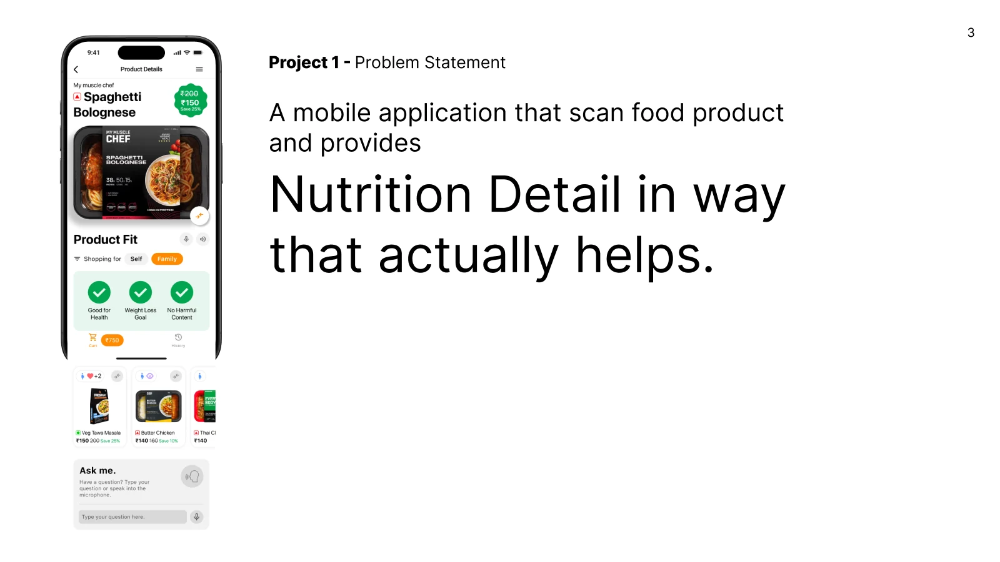
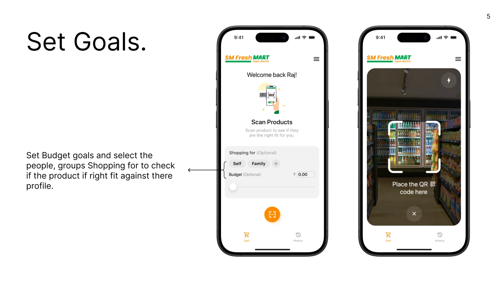
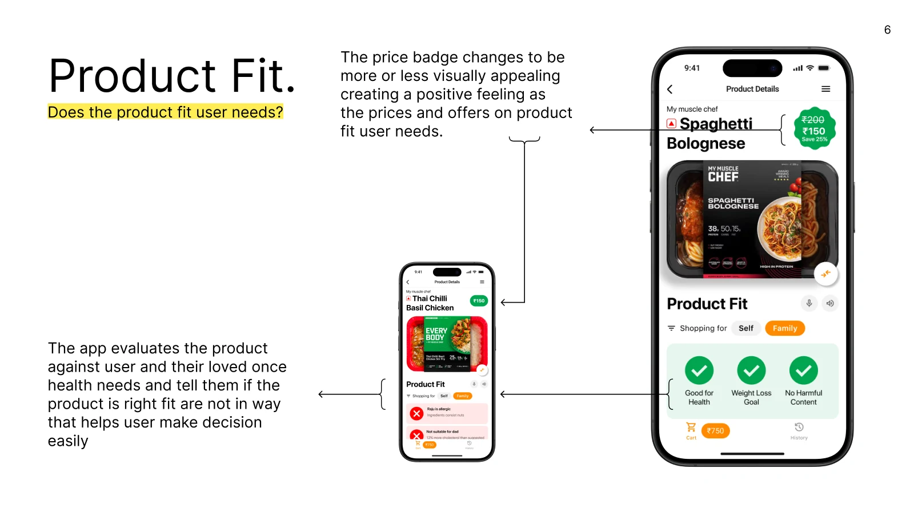
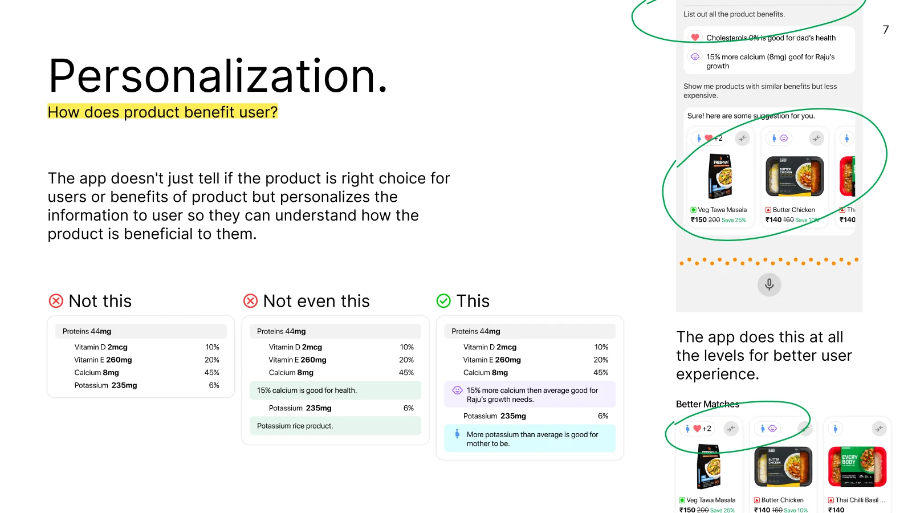
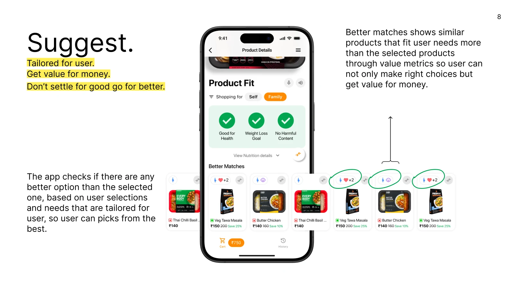
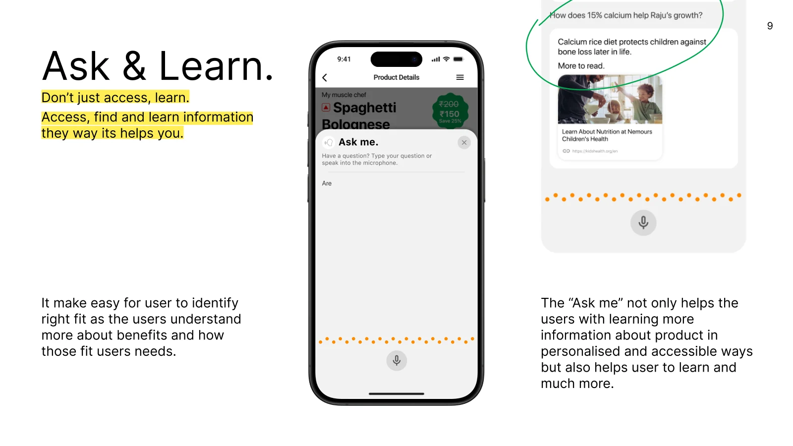
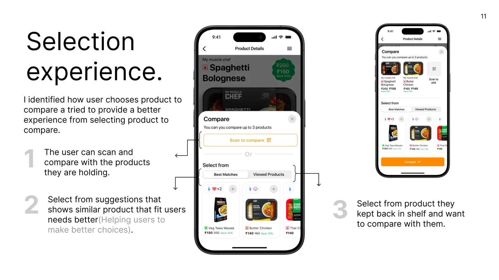
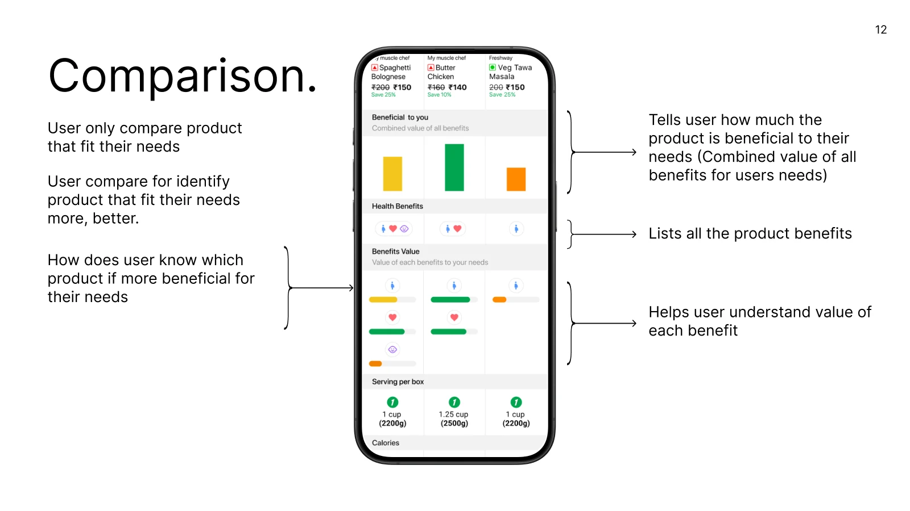
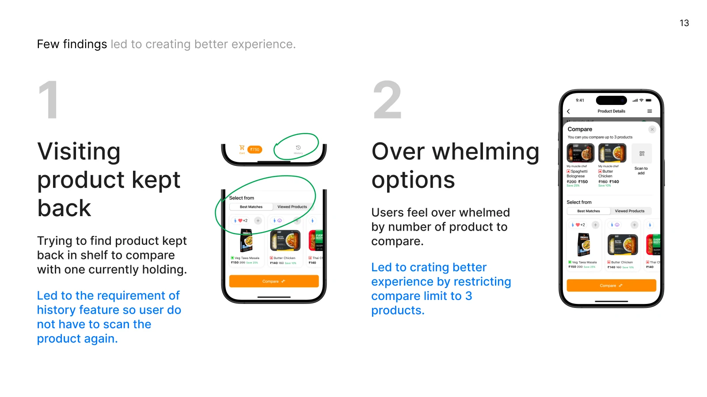
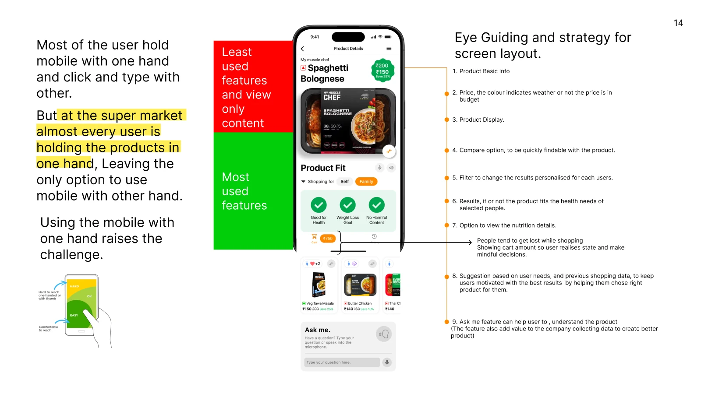

Case study · Mobile app · Grocery & health
Nutrition detail in a way that actually helps.
A mobile app that scans a packaged food product in the supermarket aisle and tells shoppers, in one glance, whether it fits the health needs and budget of the people they are buying for.
- Role
- UX research & UI design
- Platform
- iOS app
- Context
- In-store shopping at a smart supermarket
- Deliverable
- Interactive Figma prototype

The problem
The label lists numbers. Shoppers need a decision.
A nutrition label tells you a product has 8mg of calcium and 235mg of potassium. It doesn't tell you whether that is good for you, for your son who is growing, or for your dad who is watching his cholesterol. Shoppers are left to do that maths in the aisle, often while juggling a budget and a basket.
Scanning apps exist, but most of them repeat the label on a screen. I wanted to design one that answers the question the shopper is really asking.
People buy for a household with different, sometimes conflicting, health needs.
A healthy choice that blows the budget isn't a choice the shopper will make.
In the aisle the product is in one hand, so the phone has to work with the other.
How will a user identify the right product that fits their nutrition goals?
How will a user compare products?
Part 1 · Finding the right fit
From scan to a clear yes or no
Five features work together, each answering one thing the shopper wants to know.
Set goals
On the home screen the shopper picks who they are shopping for (Self, Family, or a custom group) and can set an optional budget. Every scan is then judged against those profiles, so results are personal from the first product.
Both fields are optional. A shopper in a hurry can go straight to the big scan button.

Product fitDoes the product fit the user's needs?
The app checks the product against the health needs of the user and their loved ones and shows the answer as three simple checks: good for health, fits the weight-loss goal, no harmful content. When something fails, it says why and for whom, such as "Raju is allergic: ingredients contain nuts".
The price badge reacts too. When the price and offer fit the user's needs it becomes more visually appealing, which creates a small positive moment at the point of decision.

PersonalizationHow does the product benefit the user?
The app doesn't stop at "good" or "bad". It explains each benefit in terms of the people in the shopper's profile, so they understand why the product is right for them. I explored three levels of detail for the same label.

- Proteins44mg
- Vitamin D 2mcg10%
- Vitamin E 260mg20%
- Calcium 8mg45%
- Potassium 235mg6%
Raw data. Accurate, but the shopper still has to work out what it means.
Generic advice. True for everyone, so it helps no one decide.
Personal. The benefit is tied to a real person in the household.
SuggestDon't settle for good, go for better.
Under every product sits a row of Better Matches: similar products that fit the user's needs more closely, ranked with value metrics. Icons on each card show whose needs it meets (for example "+2" more family members), and the price shows the saving.
The shopper isn't only told whether a product is right. They can see the best option on the shelf and get value for money.

Ask & learnDon't just access, learn.
"Ask me" lets the shopper type or speak a question about the product: "Are there any allergens?", "Show me products with similar benefits but less expensive", or "How does 15% calcium help Raju's growth?". Answers are personal and link to trusted reading.
Voice input matters here because one hand is busy. For the business, the questions people ask are also a direct signal for building better products.

Part 2 · Comparing products
Compare what fits, not everything on the shelf
Selection experience
I looked at how shoppers actually pick the products they compare and designed an entry point for each case:
- Scan the product they are holding.
- Pick from Best Matches, similar products that fit their needs better.
- Pick from Viewed Products, items they looked at and put back on the shelf.
This needed an understanding of how a smart store works: how shoppers add and keep track of items in their cart as they walk.

ComparisonWhich product is more beneficial for my needs?
Shoppers only compare products that already fit, so the comparison answers "which fits better". Three layers do that:
- "Beneficial to you": one bar per product showing the combined value of all its benefits for the user's needs.
- Health benefits: icons for every person each product helps.
- Benefits value: how much each single benefit is worth to each person.

What I learned along the way
Two findings that changed the design
Walking back to the shelf
Shoppers went back to find a product they had put back, so they could compare it with the one in their hand.
→ I added a History of scanned products, so nobody has to find and scan an item twice.
Too many options
Shoppers felt overwhelmed when they could compare any number of products.
→ I limited comparison to three products, which kept the side-by-side readable on a phone.

Designing for the aisle
One hand holds the product. The other holds the phone.
Most people hold a phone in one hand and tap and type with the other. In a supermarket almost every shopper is holding a product in one hand, so the phone has to be used with the thumb of the other.
I split the screen by thumb reach. The least used, view-only content sits at the top, which is hard to reach. The most used actions sit in the comfortable lower area. The layout then guides the eye in this order:
- Product basic info.
- Price, coloured to show whether it is within budget.
- Product image.
- Compare, easy to find right next to the product.
- Filter to switch results between people.
- The result: does it fit the health needs of the selected people?
- Nutrition details, one tap away.
- Suggestions based on the user's needs and shopping history.
- Ask me, to understand the product.
The running cart total stays visible in the bottom bar. People tend to lose track while shopping, and seeing the amount helps them make mindful decisions.

Takeaways
What this project taught me
Answer the question, then show the data
Leading with a clear verdict and keeping the numbers one tap away made the app useful in seconds instead of minutes.
Personal beats correct
"Good for Raju's growth" lands in a way "15% calcium" never does. Tying information to real people is what makes it helpful.
Context shapes the layout
Watching how people shop, with one hand busy and products being put back, drove the history feature, the compare limit and the thumb-first layout.
Try it yourself.
Walk through the full flow, from setting goals and scanning to comparing products and asking questions, in the interactive prototype.